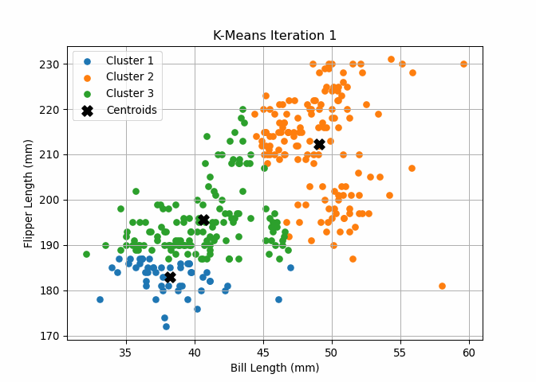
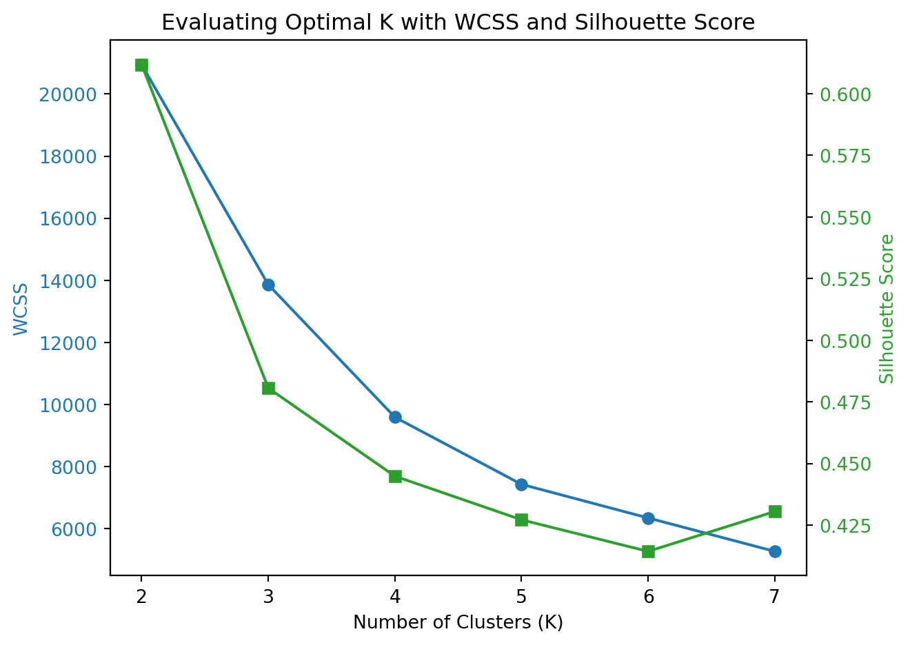
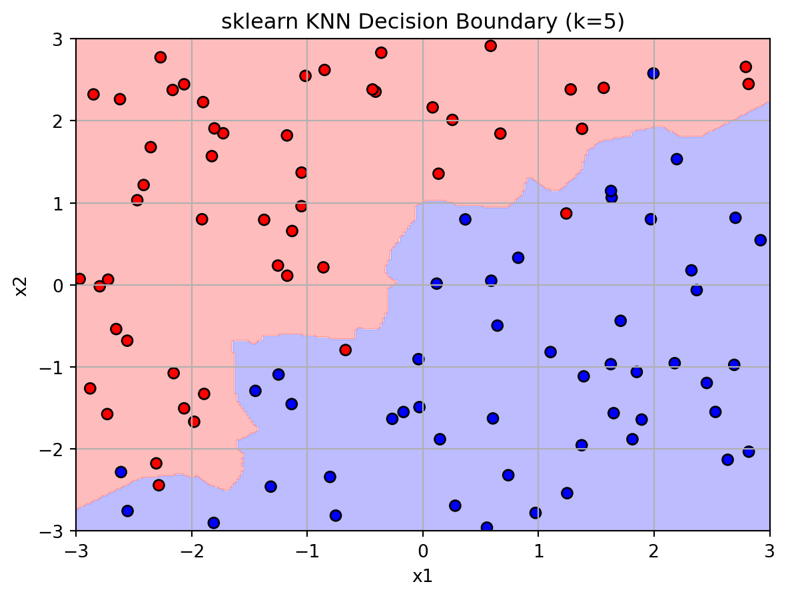
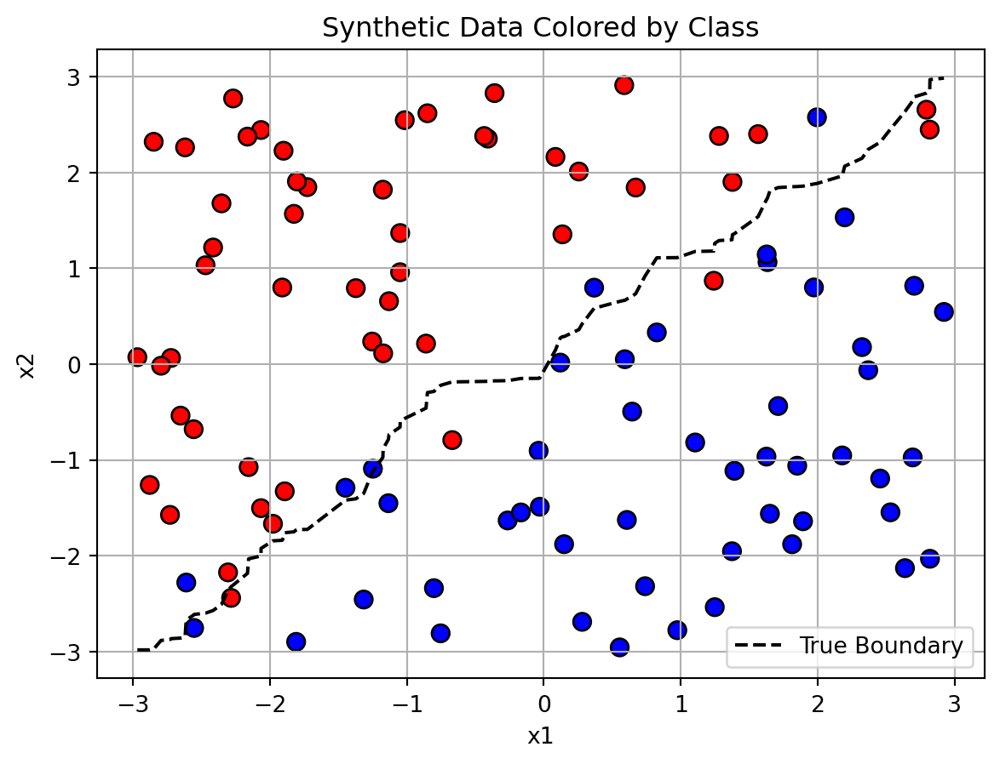
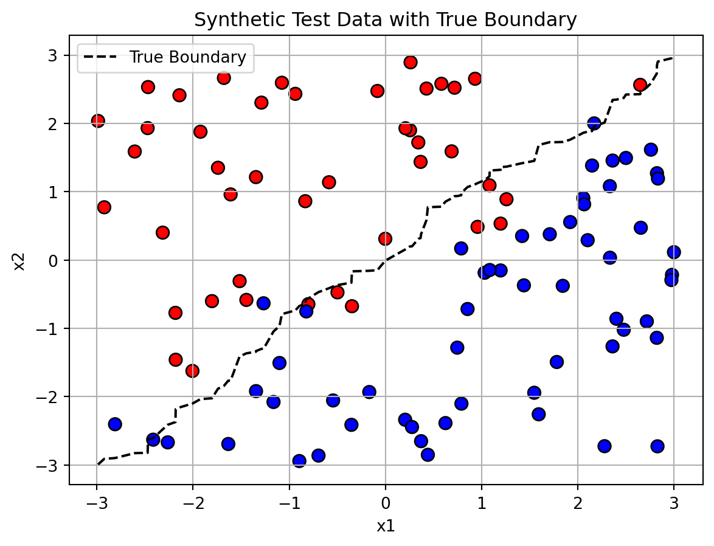
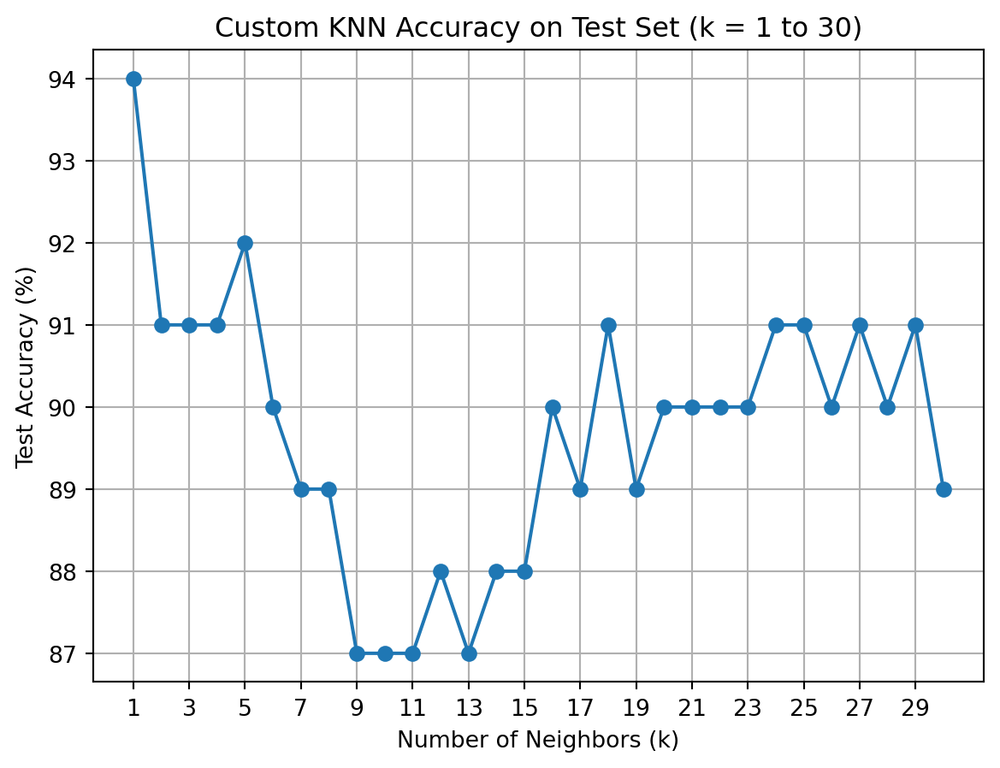

We analyze the Palmer Penguins dataset using K-Means clustering to uncover natural groupings based on physical features. Specifically, we cluster penguins using bill_length_mm and flipper_length_mm, two continuous variables that capture essential morphological differences.
We implement the K-Means algorithm from scratch to visualize how centroids shift across iterations and compare it with the built-in sklearn.KMeans function to validate our results.
Custom K-Means
import numpy as npimport matplotlib.pyplot as pltfrom matplotlib import cm# Step 1: Prepare the dataimport pandas as pd# Load the Palmer Penguins datasetpenguins = pd.read_csv(r'C:/Users/krish/hamsavi/blog/project 6/palmer_penguins.csv')X = penguins[['bill_length_mm', 'flipper_length_mm']].dropna().values# Step 2: Initialize parametersdef initialize_centroids(X, k): np.random.seed(42) indices = np.random.choice(len(X), k, replace=False)return X[indices]# Step 3: Assign clustersdef assign_clusters(X, centroids): distances = np.linalg.norm(X[:, np.newaxis] - centroids, axis=2)return np.argmin(distances, axis=1)# Step 4: Update centroidsdef update_centroids(X, labels, k):return np.array([X[labels == i].mean(axis=0) for i inrange(k)])#| code-fold: true#| code-summary: "Save plots for GIF"#| message: false#| warning: falseimport osdef kmeans_custom_save(X, k=3, max_iters=10, output_dir="kmeans_frames"): os.makedirs(output_dir, exist_ok=True) centroids = initialize_centroids(X, k)for iteration inrange(max_iters): labels = assign_clusters(X, centroids) new_centroids = update_centroids(X, labels, k)# Save the plot instead of showing it plt.figure()for i inrange(k): cluster_points = X[labels == i] plt.scatter(cluster_points[:, 0], cluster_points[:, 1], s=30, label=f'Cluster {i+1}') plt.scatter(new_centroids[:, 0], new_centroids[:, 1], color='black', marker='X', s=100, label='Centroids') plt.xlabel("Bill Length (mm)") plt.ylabel("Flipper Length (mm)") plt.title(f"K-Means Iteration {iteration+1}") plt.legend() plt.grid(True)# Save image filename = os.path.join(output_dir, f"frame_{iteration:02}.png") plt.savefig(filename) plt.close()# Stop if convergedif np.allclose(centroids, new_centroids):break centroids = new_centroids# ✅ Return final resultreturn labels, centroids# Run custom K-meanslabels_custom, centroids_custom = kmeans_custom_save(X, k=3)import imageio.v2 as imageiofrom glob import globdef create_gif(frame_dir="kmeans_frames", output_gif="kmeans_animation.gif", fps=1): frames =sorted(glob(f"{frame_dir}/frame_*.png")) images = [imageio.imread(frame) for frame in frames] imageio.mimsave(output_gif, images, fps=fps)create_gif()
Visualizing Clustering Dynamics with K-Means
To better understand how the K-Means algorithm converges, we animated the iterative process of cluster formation using bill length and flipper length data from the Palmer Penguins dataset.

K-Means animation showing centroid movement and cluster separation over time
Our custom implementation and the built-in sklearn.KMeans both produce visually similar clusters. The built-in version converges faster (internally optimized) and supports advanced features like inertia_ and n_init handling. However, our custom version offers transparency and learning value by illustrating how centroid updates and point assignments work step-by-step.
K Selection Using WCSS and Silhouette Scores
To choose the appropriate number of clusters for our K-Means model, we compared two widely used evaluation metrics: Within-Cluster Sum of Squares (WCSS) and Silhouette Score. WCSS helps us assess cluster compactness, while the silhouette score evaluates how well-separated the clusters are.
We ran K-Means for values of K = 2 through 7, calculating both metrics at each step. The chart below visualizes these results side by side, helping us identify the most effective number of clusters.
K Selection
from sklearn.cluster import KMeansfrom sklearn.metrics import silhouette_scoreimport matplotlib.pyplot as plt# K rangeK_range =range(2, 8)wcss = []silhouette_scores = []for k in K_range: kmeans = KMeans(n_clusters=k, n_init=10, random_state=42) labels = kmeans.fit_predict(X)# Within-cluster sum of squares wcss.append(kmeans.inertia_)# Silhouette score score = silhouette_score(X, labels) silhouette_scores.append(score)# Plot resultsfig, ax1 = plt.subplots()color ='tab:blue'ax1.set_xlabel('Number of Clusters (K)')ax1.set_ylabel('WCSS', color=color)ax1.plot(K_range, wcss, marker='o', label='WCSS', color=color)ax1.tick_params(axis='y', labelcolor=color)ax2 = ax1.twinx()color ='tab:green'ax2.set_ylabel('Silhouette Score', color=color)ax2.plot(K_range, silhouette_scores, marker='s', label='Silhouette Score', color=color)ax2.tick_params(axis='y', labelcolor=color)plt.title("Evaluating Optimal K with WCSS and Silhouette Score")fig.tight_layout()plt.show()

Evaluating Optimal K with WCSS and Silhouette Score
Numerical Results for WCSS and Silhouette
import pandas as pdimport numpy as npresults_df = pd.DataFrame({"K": list(K_range),"WCSS": np.round(wcss, 2),"Silhouette Score": np.round(silhouette_scores, 3)})results_df
K
WCSS
Silhouette Score
0
2
20949.79
0.612
1
3
13859.54
0.481
2
4
9587.14
0.445
3
5
7424.88
0.427
4
6
6341.41
0.414
5
7
5263.73
0.431
The table above shows the exact WCSS and silhouette scores used in our evaluation. These values reinforce the conclusion from the graph: K=3 is a reasonable choice based on the elbow in WCSS, while K=2 gives the best silhouette score.
Choosing the Optimal Number of Clusters
To evaluate how many clusters best segment the penguins based on bill length and flipper length, we compared two key metrics across values of K from 2 to 7:
Within-cluster sum of squares (WCSS): Measures compactness; lower is better
Silhouette score: Measures how well-separated and cohesive clusters are; higher is better
The WCSS plot shows a clear elbow at K = 3, suggesting this value offers a good balance between complexity and model fit. Meanwhile, the silhouette score peaks at K = 2, indicating that two clusters provide the cleanest separation.
Overall, K = 3 appears to offer the most balanced clustering solution, especially if interpretability and segmentation richness are priorities.
2a. K Nearest Neighbors
In this section, we implement and explore the K-Nearest Neighbors (KNN) classification algorithm using a synthetic dataset. This dataset features a nonlinear decision boundary, making it an ideal case to demonstrate KNN’s ability to handle flexible, non-parametric classification tasks.
Generate Synthetic Dataset for KNN
import numpy as npimport pandas as pdimport matplotlib.pyplot as plt# Reproducibilitynp.random.seed(42)# Generate featuresn =100x1 = np.random.uniform(-3, 3, n)x2 = np.random.uniform(-3, 3, n)# Define decision boundaryboundary = np.sin(4* x1) + x1y = (x2 > boundary).astype(int)# Combine into DataFramedat = pd.DataFrame({"x1": x1,"x2": x2,"y": y})# Plot the dataplt.figure()plt.scatter(dat["x1"], dat["x2"], c=dat["y"], cmap="bwr", edgecolor="k")plt.plot(np.sort(x1), np.sort(boundary), color="black", linestyle="--", label="Decision Boundary")plt.xlabel("x1")plt.ylabel("x2")plt.title("Synthetic Classification Data with Nonlinear Boundary")plt.legend()plt.grid(True)plt.show()
The following plot shows the synthetic data used for training. Points are colored based on class label y, and the dashed curve represents the true underlying decision boundary.
For comparison, we also apply sklearn.KNeighborsClassifier. The resulting boundary is nearly identical, which validates the correctness of our hand-coded algorithm.
Compare with sklearn KNeighborsClassifier
from sklearn.neighbors import KNeighborsClassifier# Fit sklearn KNNknn = KNeighborsClassifier(n_neighbors=5)knn.fit(X_train, y_train)# Predict on same gridZ_sklearn = knn.predict(grid_points).reshape(xx.shape)# Plot sklearn decision boundaryplt.figure()plt.contourf(xx, yy, Z_sklearn, cmap="bwr", alpha=0.3)plt.scatter(X_train[:, 0], X_train[:, 1], c=y_train, cmap="bwr", edgecolor="k")plt.xlabel("x1")plt.ylabel("x2")plt.title("sklearn KNN Decision Boundary (k=5)")plt.grid(True)plt.show()

sklearn KNN decision boundary (k=5)
KNN Classification Results
We used a synthetic dataset with a nonlinear decision boundary to test our custom K-Nearest Neighbors (KNN) classifier. The classifier predicts whether each point lies above or below a curved boundary defined by y = sin(4x1) + x1.
The decision boundary learned by our KNN model (k=5) closely follows the true underlying pattern. When compared to sklearn.KNN, our implementation gives very similar results, validating its correctness.
This example illustrates how KNN can flexibly model nonlinear decision boundaries using only local proximity to labeled data.
Visualize Class Labels and Decision Boundary
import matplotlib.pyplot as pltimport numpy as npimport pandas as pd# Use the same dataset you created earlier# If not already defined:# x1, x2 = np.random.uniform(-3, 3, n), np.random.uniform(-3, 3, n)# boundary = np.sin(4 * x1) + x1# y = (x2 > boundary).astype(int)# Create DataFramedat = pd.DataFrame({"x1": x1,"x2": x2,"y": y})# Plot the dataplt.figure()plt.scatter(dat["x1"], dat["x2"], c=dat["y"], cmap="bwr", edgecolor="k", s=60)plt.plot(np.sort(x1), np.sort(boundary), linestyle="--", color="black", label="True Boundary")plt.xlabel("x1")plt.ylabel("x2")plt.title("Synthetic Data Colored by Class")plt.legend()plt.grid(True)plt.show()

Scatterplot of synthetic data colored by class with wiggly boundary
We begin by visualizing the synthetic dataset generated for the K-Nearest Neighbors task. Each point is plotted by its x1 and x2 values, and colored based on the binary class y. The dashed curve represents the true underlying decision boundary, defined by the function x2 = sin(4x1) + x1. This boundary creates a nonlinear separation between classes, making it an ideal test case for KNN.
Generating a Test Dataset
To evaluate our KNN classifier on unseen data, we generated a new test dataset using the same logic as the training set, but with a different random seed. This ensures that while the underlying decision boundary remains the same, the specific data points differ — mimicking a real-world scenario where a model is applied to new samples.
As before, the outcome variable y is defined by whether x2 lies above or below a nonlinear boundary defined by sin(4 * x1) + x1. The dashed curve in the plot shows this boundary for the test data.
This test set will be used to assess how well our KNN model generalizes beyond the data it was trained on.
Generate Test Dataset for KNN Evaluation
# Set a different seednp.random.seed(24)# Generate 100 new pointsn_test =100x1_test = np.random.uniform(-3, 3, n_test)x2_test = np.random.uniform(-3, 3, n_test)boundary_test = np.sin(4* x1_test) + x1_testy_test = (x2_test > boundary_test).astype(int)# Combine into DataFrametest_data = pd.DataFrame({"x1": x1_test,"x2": x2_test,"y": y_test})# Plotplt.figure()plt.scatter(test_data["x1"], test_data["x2"], c=test_data["y"], cmap="bwr", edgecolor="k", s=60)plt.plot(np.sort(x1_test), np.sort(boundary_test), linestyle="--", color="black", label="True Boundary")plt.xlabel("x1")plt.ylabel("x2")plt.title("Synthetic Test Data with True Boundary")plt.legend()plt.grid(True)plt.show()

Synthetic test dataset for evaluating KNN
Custom KNN Prediction on Test Data
# Extract test featuresX_train = dat[["x1", "x2"]].valuesy_train = dat["y"].valuesX_test = test_data[["x1", "x2"]].valuesy_test = test_data["y"].values# Predict with custom KNNy_pred_custom = knn_predict(X_train, y_train, X_test, k=5)# Compute accuracyaccuracy_custom = (y_pred_custom == y_test).mean()print(f"Custom KNN Accuracy on Test Set: {accuracy_custom:.2f}")
Custom KNN Accuracy on Test Set: 0.92
Compare with sklearn KNN
from sklearn.neighbors import KNeighborsClassifier# Fit modelknn_sklearn = KNeighborsClassifier(n_neighbors=5)knn_sklearn.fit(X_train, y_train)# Predicty_pred_sklearn = knn_sklearn.predict(X_test)# Accuracyaccuracy_sklearn = (y_pred_sklearn == y_test).mean()print(f"Sklearn KNN Accuracy on Test Set: {accuracy_sklearn:.2f}")
Sklearn KNN Accuracy on Test Set: 0.92
Implementing and Validating K-Nearest Neighbors
To explore how the K-Nearest Neighbors (KNN) algorithm works, we implemented it from scratch and evaluated its performance on a synthetic test set of 100 new data points. Each point was classified based on the majority vote among its 5 nearest neighbors from the training data.
To validate our implementation, we compared our predictions against those generated by scikit-learn’s built-in KNeighborsClassifier.
Accuracy Results:
Custom KNN Accuracy: 92%
Scikit-learn KNN Accuracy: 92%
These identical results confirm the correctness of our implementation. While the built-in version is optimized for speed and scalability, our manual approach offers a transparent view into how KNN operates — from distance calculations to voting.
This exercise highlights the simplicity and power of KNN for nonlinear decision boundaries, and how well it generalizes when tuned appropriately.
Tune K for Custom KNN
accuracies = []for k inrange(1, 31): preds = knn_predict(X_train, y_train, X_test, k=k) acc = (preds == y_test).mean() *100# convert to % accuracies.append(acc)# Plottingplt.figure()plt.plot(range(1, 31), accuracies, marker='o')plt.xlabel("Number of Neighbors (k)")plt.ylabel("Test Accuracy (%)")plt.title("Custom KNN Accuracy on Test Set (k = 1 to 30)")plt.grid(True)plt.xticks(range(1, 31, 2))plt.show()

Test Accuracy for Custom KNN as k Varies from 1 to 30
Tuning the Number of Neighbors (k)
To determine the optimal number of neighbors for K-Nearest Neighbors (KNN), we evaluated our custom classifier across values of k from 1 to 30. For each value of k, we calculated the percentage of correctly classified test points.
The plot below shows how accuracy varies with the number of neighbors:
Peak accuracy occurs at k = 1, reaching 94%
A small drop-off follows as k increases, with accuracy stabilizing between 87% and 91%.
The model begins to underfit slightly as k grows, since higher k values average over more neighbors and smooth the decision boundary too much
This evaluation highlights a common tradeoff in KNN:
Small k values can be too sensitive to noise (overfitting)
Large k values can overlook finer patterns (underfitting)
Optimal Value:
In this case, the highest accuracy on the test set was achieved with k = 1, although values like k = 3 or 5 still offer solid performance with better generalization.
This process of tuning k demonstrates how model complexity impacts performance and why it’s essential to validate hyperparameters, even in simple algorithms like KNN.